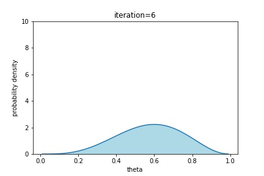
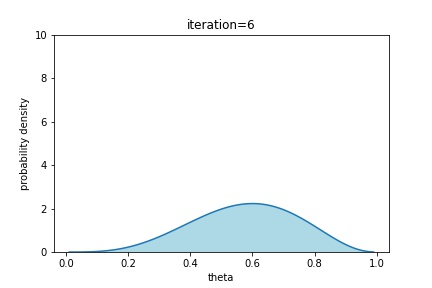

Machine Learning for Power X - Water
Henry O. Jacobs
May 28, 2021
TLDR
- Calibrate via direct measurment
- 1D image-processing... meh.
- event based model... yay.
- clustering saves us from training too many models
- coin-flip math to incorporate user-feedback
Calibration
-
Press the "Calibration button" on the PowerX app
-
Fill the PowerX provided container to fill line.
-
Press "Done".

???
- Why not have the user provide pipe-type and dimension?
- How much water?
- Leaks?
- Noise?
How to model sensor noise
- Observe sensor readings against known quantity of fluid
- Randomize over devices/pipes/faucets
- Fit a classical distribution to the data
Plato's Cave

mediocre ideas
Computer vision model

from arXiv/abs/1506.02640
Spotify inspired
People at Spotify might know how to detect what instrument is playing and when.
Critiques of CV inspired models
events must conclude prior to prediction
munges arbitrary timescales
might perform badly for events with variable time-scales (e.g. showers)
opaque
Proposed solution
- Detect start times.
- Given a start time, detect end time.
- Classify the outlet type and water-usage.
Architecture
Start time detection
Consider a convolution $x \stackrel{\kappa}{\mapsto} z$ $$ z(t) = \sum_{k=0}^{N} \kappa(k) x(t-k) $$
Convolution
Open window classification
RNN, rolling-window CNN, combination of both.End time detection
Window classification
Choose features
- window length
- initial/final jump size
- total water consumed (??)
- max/min/mean values of convolved signal
- ...
Then use logistic regression on $\mathbb{R}^n$.
Overview
Concerns
- Overlapping windows (distortion and concurrency)
- Annual seasonality
- Overfit (e.g. only using NYC data)
- Computational budget (edge computing?)
Model adaptability
- What if we add new fields to our data?
- How can we personalize the experience?
- How can we incorporate user-feedback?
Adding fields
A single binary field would split data into two. So could try training two models.
A single $n$-ary field would split data into $n$ components. So ...
Adding fields
we cluster.

or just redesign the model.
Personalized anomaly detection
Example: Daily water usage
- Monitor sample mean/variance
- When converge drop old data (sliding window)
More generally, we would do Bayesian updates to a probabilistic model $$ \Pr(\theta \mid x_t) = \frac{\Pr(x_t \mid \theta) \Pr(\theta) }{\Pr(x_t)} $$
User feedback
User feedback
Imagine we have two models. We'd like to know which one is better for a given household. This is identical to estimating the probability of flipping heads on a (biased) coin.
Coin flips
If we have a coin with an unknown bias $\theta \in [0,1]$ we can assume a prior-distribution on $\theta$ of the form. \[ \Pr(\theta) \propto \theta^{\alpha-1} (1-\theta)^{\beta-1} \] After one coin flip landing heads we do a Bayesian update to get \[ \Pr(\theta | X_1=H) = \theta^{(\alpha+1)-1} (1-\theta)^{\beta-1} \]
Coin flips (cont)


 



Summary (tldr)
- Calibrate via direct measurment
- 1D image-processing... meh.
- event based model... yay.
- clustering saves us from training too many models
- coin flip math to incorporate user feedback